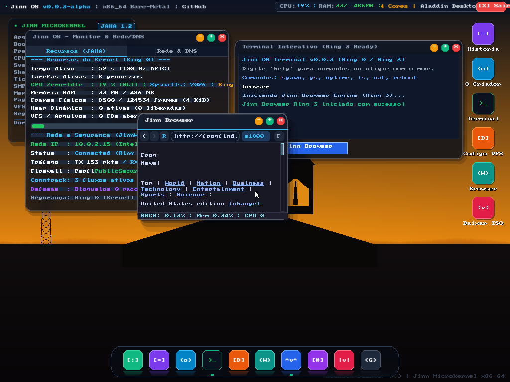
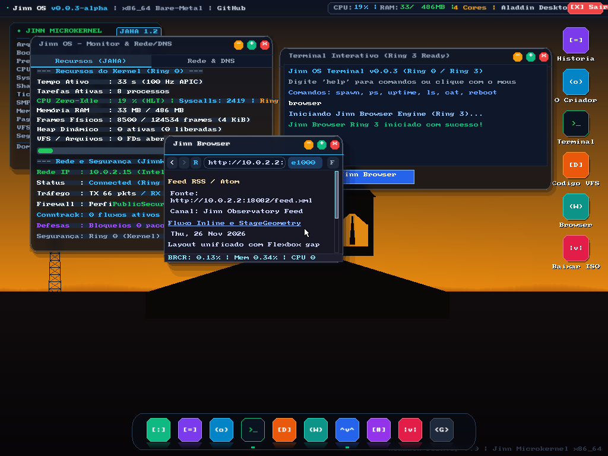

Jinn Browser em Maturidade: Redirecionamentos Multi-Hop, <picture>/<source srcset>, StageGeometry e Tela Cheia 1024x768 (F11)
Após estabilizar o transporte TLS 1.3 sobre Intel e1000 e VirtIO-Net, consolidamos o motor visual e de compatibilidade web do Jinn Browser (apps/ola-mundo/) junto ao compositor Ring 3 Aladdin e ao microkernel Jinn OS. Neste post-mortem documentamos os gargalos reais descobertos via screendump no QEMU e as correções validadas ponta a ponta — preservando integralmente IrqSafeSpinLock, EOI incondicional no PIC 8259A, alocação estática em .bss e 0.00% de CPU ociosa nos APs.
1. Problemas Identificados & Diagnóstico Real
-
Atalho
F11descartado e colisão com ASCII'W': Emsrc/interrupts/ps2_keyboard.rs, o scancode PS/2 Set 1 da teclaF11(0x57) consultavaSCANCODE_MAP_NORMAL[0x57] == 0e era silenciosamente ignorado antes mesmo de chegar aoSharedInputEvent. Além disso, o byte0x57coincide com ASCII'W', podendo gerar conflito semântico ao digitar URLs ou atalhos. -
Tela cheia
1024x768bloqueada por validação de superfície: Quando o navegador alocava 768 páginas (3 MiB) viaDynamicSurfaceBuffere enviava o buffer1024x768emsys_window_update,src/gui.rs(client_window_update) rejeitava o frame com-EINVALporqueKernelClientWindowpermanecia fixo em300x180(54.000 px != 786.432 px), e nem oaladdin-servernem oWindowManagersincronizavam a transição borda-a-borda nem restauravam as coordenadas salvas ao sair. -
Compatibilidade web moderna em Ring 3 sem estouro de stack: Páginas reais com redirecionamentos encadeados (
301/302/303/307/308e<meta refresh>), tags<picture>/<source srcset>, atributos adjacentes (data-srcvssrc), fluxos horizontais de navegação, feeds XML RSS/Atom e respostas JSON precisavam de tratamento determinístico com buffers estáticos em.bss.
2. Melhorias Arquiteturais Implementadas
Teclado Não-Colidente & Fullscreen Ponta a Ponta
ps2_keyboard.rs passou a emitir códigos não-ASCII dedicados (0x8B para F11, 0x8C para F12). Em apps/ola-mundo/src/main.rs, 0x8B alterna tela cheia independentemente do foco da barra de endereços. No kernel (src/gui.rs), client_window_update passou a registrar base_width/base_height para alternância reversível 300x180 ↔ 1024x768, sincronizada no compositor via WindowManager::sync_client_window_size, Window::is_fullscreen, client_pos_from_screen (coordenadas 1:1 para arraste da scrollbar via EVENT_MOUSE_MOVE) e heap estático em .bss ajustado para 16 MiB no aladdin-server.
StageGeometry, Redirects, <picture> & Formatos
compute_stage_geometry centraliza o conteúdo em coluna legível de até 760px na tela cheia mantendo barra de ferramentas e barra BRCR fora da área de rolagem. O parser HTML agora segue cadeias HTTP 301→302→308 e meta refresh com resolve_relative_url e detecção de ciclos (TooManyRedirects), seleciona fontes de <picture>/<source srcset> com guarda de limite de atributo (ignorando data-src), renderiza PNG e BMP lado a lado em tabelas e formata payloads RSS/Atom XML, JSON e avisos de shell SPA JS.
3. Evidência Visual Real no QEMU (Screendump)
Todas as capturas abaixo foram obtidas diretamente da execução do microkernel Jinn OS em QEMU (-smp 4, -m 512M, NIC Intel e1000) sem pós-processamento.

1024x768 ativado via F11 em https://jinn-os.dev.br sobre TLS 1.3, exibindo coluna centralizada StageGeometry (760px), botão [F] ativo e badge TLS1.3 verde.

301→302→307/308 até /final_target: fluxo inline Top : World : Nation, imagem PNG 96x48 via <picture>/<source srcset>, BMP 64x32 e tabela lado a lado.

68k.news → http://frogfind.com/news com barra de rolagem proporcional e links horizontais inline clicáveis.

4. Verificações & Métricas Coletadas Após as Mudanças
- Aladdin Host Unit Tests (
--features std):52 passed, 0 failed(incluindo ciclo de janelas, scissor clipping e despacho de eventos de cliente). - Suíte Visual & Interação QEMU: Redirect
301→302→308, loopTooManyRedirects,<meta refresh>, RSS XML, JSON, aviso SPA,68k.news→frogfind.com/news,https://jinn-os.dev.bremF11 Fullscreen (1024x768)com download devalid-rss-rogers.png(2044 bytes),PageDowne clique/arraste na barra de rolagem (MOUSE_DOWN x=1014 y=100), retornoWINDOWED (300x180)e tela de erro TCP. - HotRouteTable E2E:
15/15testes RFC 1035/DNS,10/10testes Fast-Path,ARP=0 DNS=0após cold reboot, ecpu1..cpu3 idle=100.00%(d_task=0— política Zero-Idle preservada). - DNS 3 Camadas + Validação Cruzada PCAP + JAHA 1.2: Cache hit local e fallback cascata
1.1.1.1 → 8.8.8.8 → 10.0.2.3, captura PCAP aprovada emIntel e1000eVirtIO-Net, e reconciliação de memóriaDiscrepancy: 0 bytes(INVARIANT PASSED).
5. Aplicações na Indústria, Uso Doméstico e Servidores
Indústria, Quiosques & IHMs Determinísticas
Operadores industriais e totens de chão de fábrica podem rodar painéis HTML/XML/JSON locais em tela cheia 1024x768 dentro de um único processo Ring 3 isolado (ola-mundo.elf com ~1,2 MiB em disco), sem motor Chromium nem GPU dedicada, eliminando consumo ocioso em CPU quando não há interação.
Uso Doméstico & Hardware Legado
Permite leitura limpa de portais textuais, documentação offline em disco FAT32, acompanhamento de feeds RSS/Atom e navegação em redes domésticas com consumo previsível de RAM (~33 MiB totais do sistema) e diagnóstico visual transparente em caso de falha de rede ou TLS.
Servidores & Inspeção Local de Telemetria
Administradores podem utilizar o navegador nativo e o formato estruturado JSON/RSS para inspecionar endpoints de status HTTP/HTTPS (TLS 1.3), rotas quentes cacheadas e saúde de rede diretamente na console do host ou VM sem depender de pilhas gráficas pesadas.
6. Limitações Conhecidas & Fronteira Honesta
O Jinn Browser continua focado em HTML/CSS estático essencial, imagens PNG/BMP/PPM e payloads XML/JSON: não executa aplicações JavaScript completas ou DOM dinâmico de SPAs pesados (apresentando aviso estruturado nesses casos), ainda não suporta WebP/AVIF nem multiplexação HTTP/2 ou QUIC, e os testes atuais foram conduzidos em ambiente virtualizado QEMU (x86_64) sobre e1000 e VirtIO-Net.
Jinn Engineering Observatory • Open Collaboration
Applicable Ecosystems & Open Collaboration
Conexões arquiteturais deste estudo com domínios industriais, pesquisa científica e infraestrutura auditável:
Chamada Aberta: Indústria Local, Academia & Setor Público Eticamente Responsável
Convidamos empresas regionais de automação industrial e integradores, universidades e grupos de pesquisa em sistemas operacionais e projetos públicos/governamentais eticamente responsáveis (com transparência e código auditável) a reproduzirem estes experimentos em bancada física, propor workloads comparativos ou avaliar pilotos com o Jinn OS e o JHCS.
![[Valid RSS]](/valid-rss-rogers.png "Validate my RSS feed")